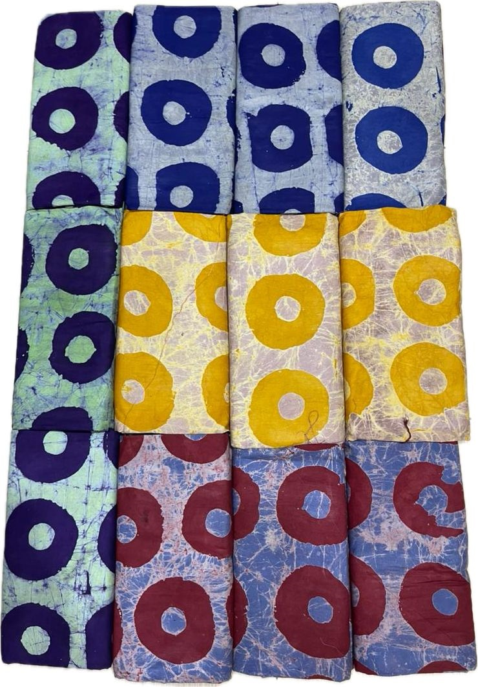
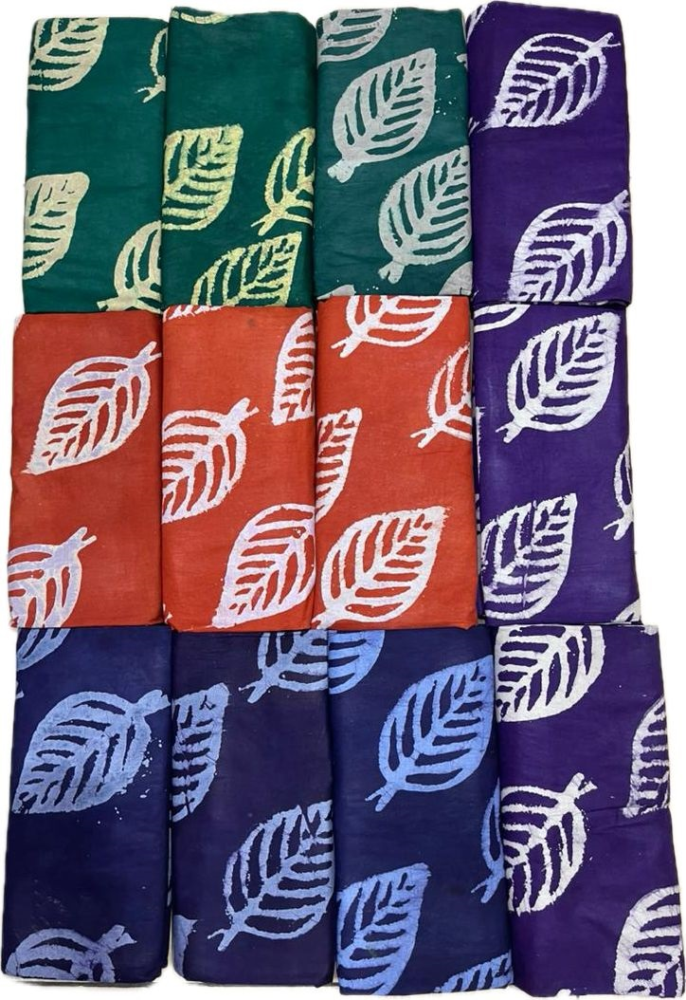
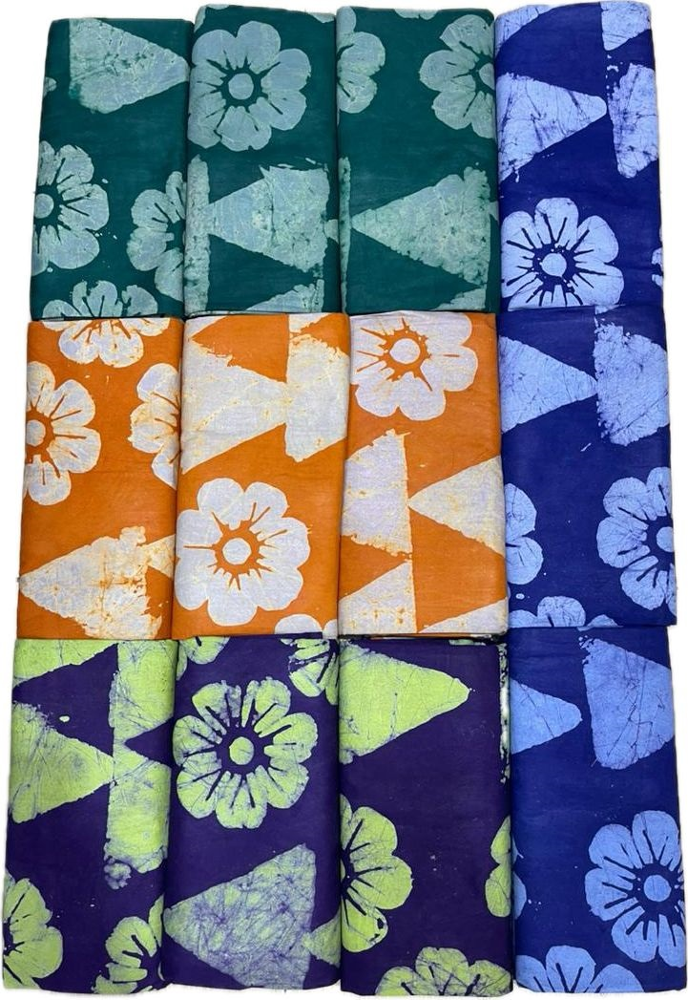
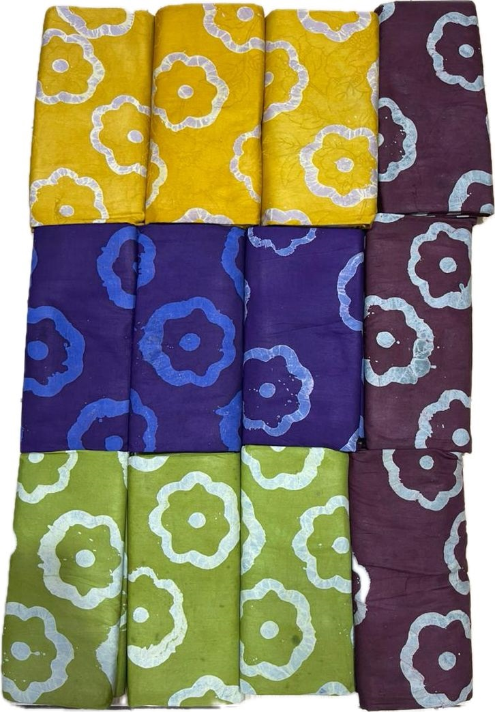
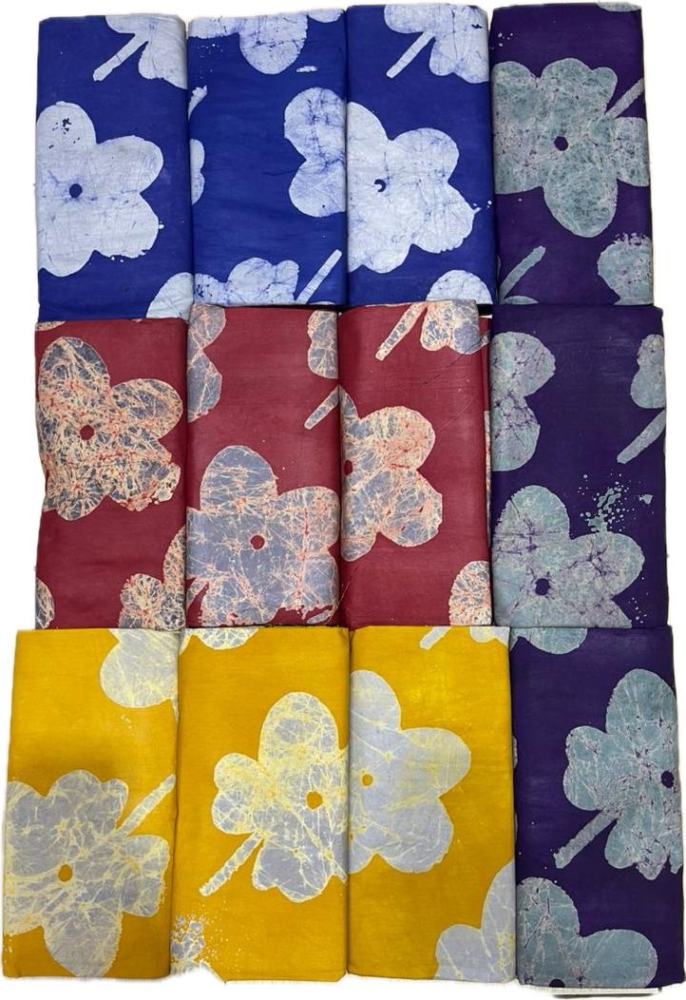

Signature
Adire Fabrics
Handpicked Adire of all kinds – from soft, subtle patterns to bold statement prints for dresses, boubous, two‑pieces and more.
Curated looks for everyday elegance, parties and special occasions.
Signature
Handpicked Adire of all kinds – from soft, subtle patterns to bold statement prints for dresses, boubous, two‑pieces and more.
Everyday & Events
Chic, easy‑to‑wear outfits tailored to flatter you – ready to pick up and step out in style without the stress of sewing from scratch.
Trad Luxe
Premium aso oke for traditional weddings, engagements and celebrations – designed to match your colour theme perfectly.
Finishing Touch
Stylish shoes and bags to complete your look – from classy heels to chic handbags that pair perfectly with your outfits.
A glimpse of our Adire fabrics and ready‑to‑wear looks available at Eriklassic.

Vivid circular motifs in rich colours – perfect for boubous, two‑pieces and statement dresses.

Nature‑inspired leaf prints, ideal for casual chic and event outfits.

Playful floral and geometric patterns in bright, happy tones.

Soft yet colourful designs that work beautifully for everyday wear.

Eye‑catching blossom prints for parties, church and owambe looks.